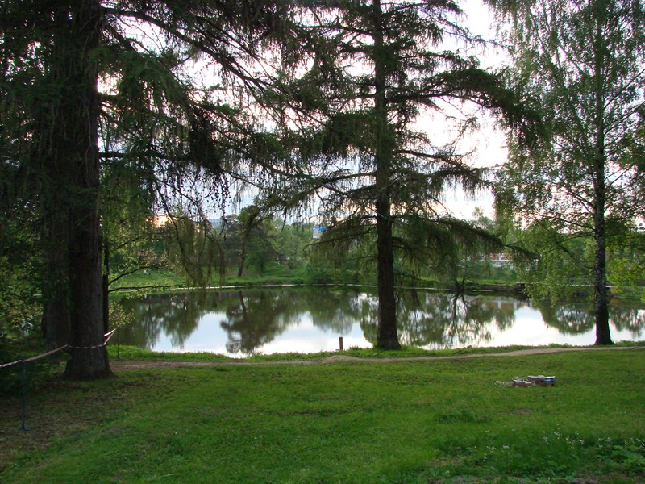

|  | Министерство культуры Российской Федерации Портал Культура.рф Проект «Образы России» |
Музей-заповедник А.С.Пушкина (усадьба Вяземы)
Лиственницы

Сохранившиеся в усадебном парке несколько старовозрастных деревьев лиственницы сибирской и дуба черешчатого можно считать, наряду с липой мелколистной регулярного и пейзажного парков, наиболее ценными объектами живой природы дошедшими до наших дней.
Наиболее старовозрастными из имеющихся на данном участке парка деревьев являются несколько, лиственниц и лип (всего на территории, примыкающей к усадебному дворцу и храму находится 16 лиственниц). В их числе две лиственницы в возрасте 190 лет с южной стороны дворца. Еще несколько 170-180 - летних лиственниц и 120-170-летних лип расположено в западной и северо-западной частях участка - вдоль правого берега пруда и устья оврага. Несколько старовозрастных лиственниц возрастом от 120 до 160 лет сохранилось также в восточной част пейзажного парка - в рядовых посадках на так называемой бывшей «поляне управляющего» и «Поповке».